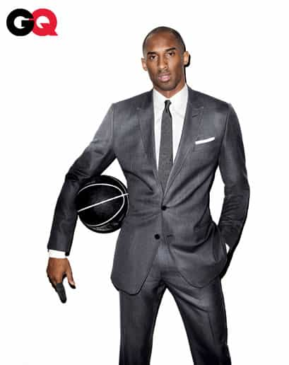

Mikael holds a BA in English Literature with a writing emphasis and also holds a Minor in History. He focuses most of his attention towards physical fitness, sports, small town game, and self improvement.


While sitting in my cubicle doing my resume building job the other day, I realized how much working for a large corporation has taught me about the concept of game. While previously it has been mentioned on RoK that game can get you a job, people often overlook what a job can teach you about game. Below are eight reasons game is like big business:
If a company is in a poorly located city, it will struggle. If it is in a great location however, it can excel. No one wants to go get $100 plate of dinner in the ghetto, and no one in Beverly Hills is seeking goodwill. Game works the same way. For me, I had to block out my entire home state, but for most people this is as simple as blocking out “Joe’s Pub.” While “Joe’s Pub” offers $1 beers, “The Oar House” has triple the price, but it also has triple the girls. In the end being in the better location will get you better results.
In business everything is about the numbers. You are rarely asked at a company how you did something. Companies want minimal effort, minimal cost, and maximum results. Game is no different. While it’s great to brag about always going home with a 9, if you can leave the bar with consistent 8’s with significantly less effort, that should be your target. Only when you reach a significant level will anyone attempt to look beyond your numbers. More numbers and more stories equal more success.
I’ve always been told that you should dress the part you want, not the part you have. The better you dress, the quicker you’re noticed, and the more you seem motivated. If you go sit in your cubicle and hate your job but smile and wear a suit, you’ll be noticed. In retrospect if you show up to work in your cubicle job that you love, happy as hell, and you wear ripped up jeans, shoes that are falling apart, and a coffee-stained button-up, no one will care that you love your job because you look like you don’t have your shit together. Same goes for game. While you don’t need to wear a suit at every venue, you should be finding ways to dress respectable and above the relative standard of those around you. Dressing to impress makes you stand out and more often approached for promotions at the office. It’ll also get you laid.

At a decent sized corporation, you are just a number. When you go to the bar (unless you’re running small town game) you are the same. Whoever you hit on has already encountered 18,000 other men just like you. That means you need to run your game and be you. Eventually employee #867443 may be the CEO of Americorp and the most powerful person in the world. But today you’re a number. So just do your job.
Companies put a lot of money into finding ways to sell their products. If you can find a way to help them sell their products in more creative and effective ways you’re likely a valuable asset and will be well compensated for your services. Game is the same way. Women need you to sell yourself to them. And if you can do that, you’re gonna get laid.
While every CEO want’s to hear what you can do for them, it’s ultimately what can they do for you. This directly correlates with marketing. You should be selling your product, but you should only be selling that product to better yourself. By coming up with a better plan you’ll get a promotion, which means more money for yourself. With game you’re basically selling yourself to women, but only for your own gain. Whether its business or game, always have an ulterior motive. It’s how you get promoted.
In any office there is always someone more envious of you. Whether it’s you who finds ways to advance quicker, or just doing your job with less effort, people get pissed and try and take you down with them. In the game world this is the obvious cockblocker. Whether it be an envious friend who’s pissed you get laid, someone at the bar who just sees you leave every weekend successful, or the jealous fat friend of the woman you’re trying to have sex with, haters are everywhere. If you’re good at covering your tracks in the office to avoid confrontation, scandals, or punishment, you’ll be fine at handling cock blockers.
Lastly is networking, probably the easiest and most overlooked way to success. The more people you meet through your company, or conventions with other companies, the more alternate opportunities will be presented to yourself. Game is the same way. While it’s great to go out with your usual set of friends, finding alternate friends or even just other regulars at venues you frequent will give you a larger network to work with. Jack, who goes to your regular bar, might decide to throw a kick ass house party with a bunch of women he met in Toronto, and now you have an invite. Had you not decided to network, you’d be fighting the same crowds at your usual spots once again.
So there you have it. Now go get that office promotion.
Don’t Miss: Life Was Better With Cigarettes